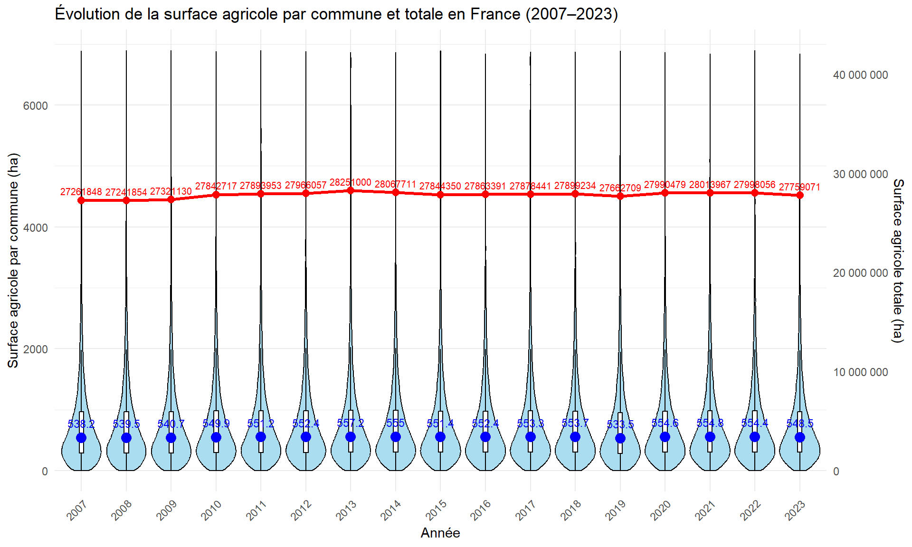
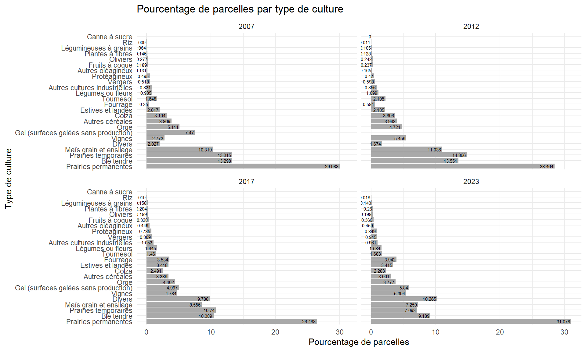
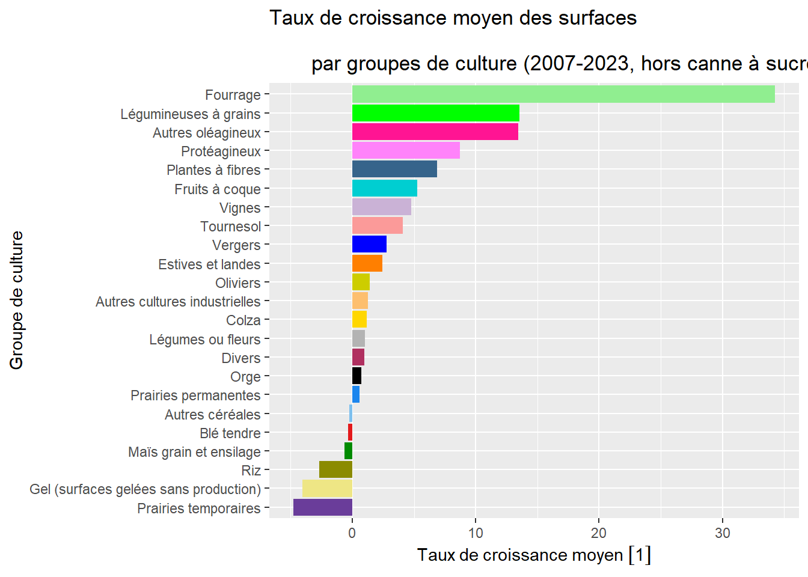
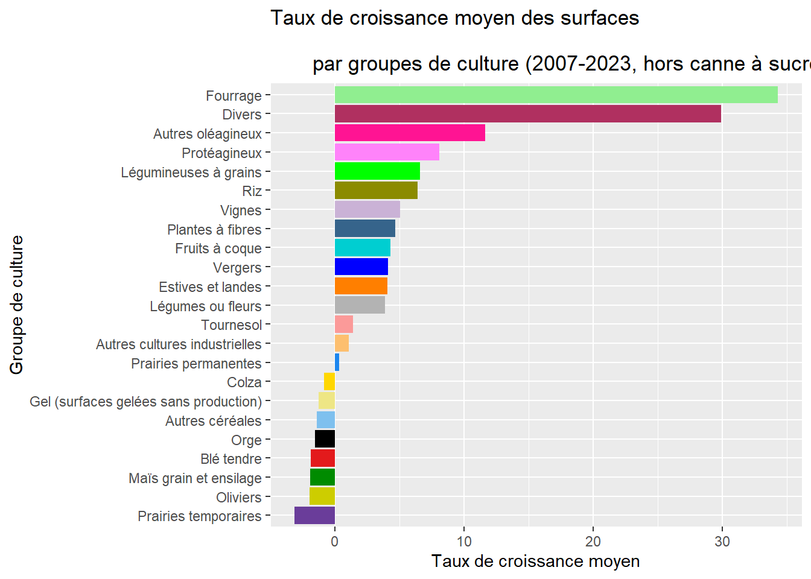
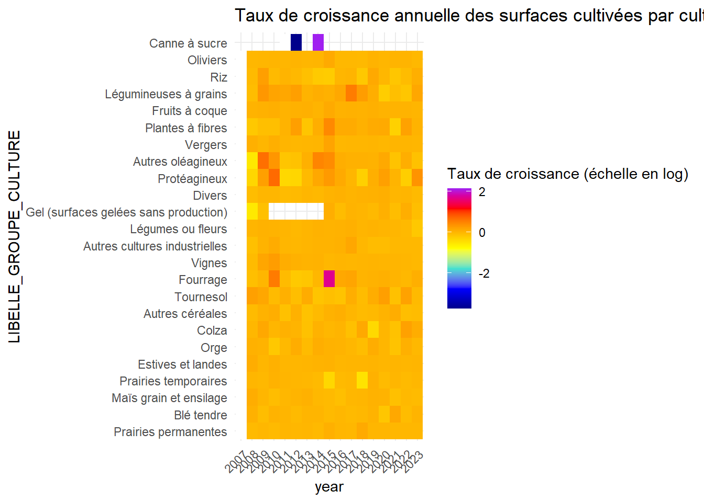
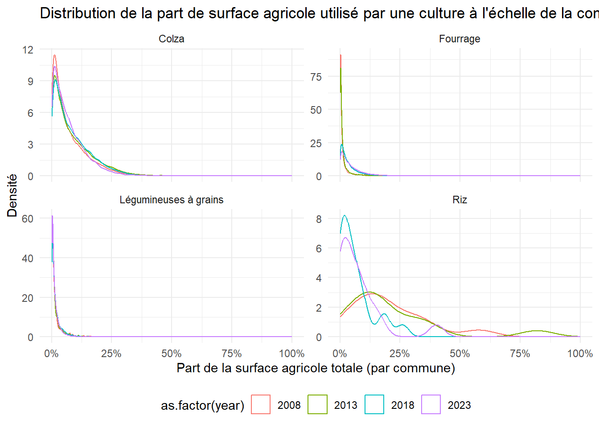
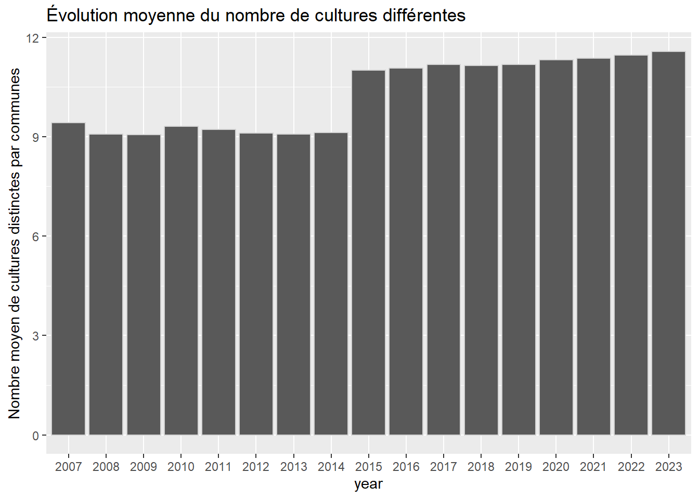

Analyse descriptive du mix cultural de la France (2007-2023)
Introduction
Ce document présente la répartition des cultures en France à partir des données du Registre Parcellaire Graphique (RPG). Le RPG est une base de données géographique qui recense les parcelles agricoles et les cultures qui y sont pratiquées. Ces données sont déclarées par les agriculteurs dans le cadre de leur déclaration de la Politique Agricole Commune. Elles sont en libre accès et sont mises à jour chaque année.
L’objectif de cette analyse est de visualiser la diversité des cultures pratiquées en Bretagne et d’identifier les principales cultures présentes dans la région. En particulier, nous souhaitons identifier les dynamiques des cultures (cultures émergentes ou en déclin) ainsi que leur répartition spatiale. Cette analyse utilise les données du RPG sur 17 années (2007-2023), aggrégées à l’échelle de la commune. Les scripts permettant de collecter, et préparer les données du RPG sont disponibles sur GitHub dans le dépôts RPG_PrepareData Nous disposons ainsi de l’usage des sols entre 24 et 28 grands groupes de culture. Nous mesurons la surface dédié à chaque groupe de culture par commune et année, ainsi que le nombre de parcelles.
Dans une première partie, nous présentons l’usage des sols de manière globale en France sur la période 2007-2023. Dans la deuxième section, nous étudions la dynamique des usages des sols, en étudiant en particulier l’expansion des cultures émergentes et le déclin des cultures en perte de vitesse. Enfin, nous étudions la diversité des cultures à l’échelle des communes et son évolution dans le temps.
Le mix cultural en France: une présentation générale
Evolution de la surface agricole en France
Le graphique ci-dessous montre l’évolution sur la période 2007-2023 de la surface agricole totale en France ainsi que sa distribution entre communes.
Ce graphique montre que la surface agricole utilisée totale en France reste stable dans le temps (ligne rouge). De manière générale, on observe une légère augmentation de la surface agricole totale, à hauteur de 2% entre 2007 et 2023. La surface agricole française totale a atteint un premier maximum en 2012, puis suite à une diminution jusqu’en 2019, un nouveau maximum en 2021.
La distribution de la surface agricole totale par commune montre également une stabilité importante (graphiques en violon, et boite à moustache associée). Près de 90% des communes en Bretagne ont une surface agricole utilisée inférieures à 3000 ha, et la médiane de la surface agricole utilisée des communes restent stable dans le temps (environ 1 080 ha).
La spécialisation des cultures en France
Surface agricole par culture
La tableau ci-dessous présente les surfaces agricoles utilisés par culture en France sur la période 2007-2023. Il s’agit du total des surfaces par culture sur toutes les parcelles, qui est calculé par année et dont nous présentons ici la moyenne sur la période 2007-2023.
| Groupe de culture | Surface de la culture (ha) | Part (%) |
|---|---|---|
| Surface agricole totale | 28815847.8 | NA |
| Prairies permanentes | 6976719.2 | 25.1 |
| Blé tendre | 5038322.0 | 18.2 |
| Maïs grain et ensilage | 3014955.3 | 10.9 |
| Prairies temporaires | 2645918.8 | 9.5 |
| Estives et landes | 2055614.6 | 7.4 |
| Orge | 1797203.0 | 6.5 |
| Colza | 1449134.7 | 5.2 |
| Autres céréales | 1044425.2 | 3.8 |
| Tournesol | 777740.7 | 2.8 |
| Fourrage | 737652.2 | 2.7 |
| Vignes | 525859.1 | 1.9 |
| Autres cultures industrielles | 515325.4 | 1.9 |
| Gel (surfaces gelées sans production) | 486780.6 | 1.8 |
| Légumes ou fleurs | 402370.6 | 1.4 |
| Protéagineux | 361613.5 | 1.3 |
| Divers | 348512.9 | 1.3 |
| Autres oléagineux | 223620.2 | 0.8 |
| Plantes à fibres | 144762.9 | 0.5 |
| Vergers | 109987.1 | 0.4 |
| Légumineuses à grains | 84948.0 | 0.3 |
| Fruits à coque | 42955.2 | 0.2 |
| Riz | 18521.4 | 0.1 |
| Oliviers | 12901.0 | 0.0 |
| Canne à sucre | 4.1 | 0.0 |
La surface agricole totale est de 2.8815848^{7} ha.
La culture la plus répandue en France sont les prairies permanentes, qui représente 25.1 % de la surface agricole totale. Les prairies permanentes sont suivies par le blé tendre et le maïs, qui représentent respectivement 18.2 % et 10.9 % de la surface agricole totale. Les prairies temporaires, les estives et landes et l’orge complètent le tableau des principales cultures, représentant respectivement 9.5 %, 7.4 % et 6.5 % de la surface agricole totale.
Part de parcelles agricoles par culture
La figure ci-dessous représente le pourcentage de parcelles agricoles par type de culture en France pour quatre années (2007, 2012, 2017 et 2023). Il s’agit du nombre de parcelles par culture divisé par le nombre total de parcelles recensés par le RPG en France sur l’année.

Initialement, on retrouve les plus grandes cultures en terme de surface agricole comme occupant la majorité des parcelles. En effet, les prairies permanentes occupent à elles seules en moyenne un tiers des parcelles en France, avec une forte augmentation depuis 2017. Elles sont suivies par les cultures de blé tendre, prairies temporaires et maïs, consituant au total plus de 50% des parcelles agricoles. On peut noter néanmoins une décroissance continue des cultures de blé tendre et prairies temporaires, avec une baisse respective de 6% et 4% des parcelles agricoles occupées.
Par ailleurs, on observe que les estives et landes et l’orge, qui suivent les cultures ci-dessus en terme de surface, sont devancés notamment par les cultures Divers, les vignes ou encore les surfaces gelées sans production. En particulier, les vignes représentent en moyenne 1,9% de la surface agricole totale, alors qu’elles occupent en moyenne 4,6% des parcelles.
Evolution dynamique du mix cultural en Bretagne
Cette section présente des analyses statistiques visant à identifier des cultures en développement et en déclin en France.
On observe une croissance de la part des surfaces agricoles allouée aux prairies permanentes, passant de 25% à 28% entre 2007 et 2023, avec une très forte hausse entre 2017 et 2018. De la même manière, on observe une forte décroissance de la part des prairies temporaires. Cela s’explique par une redéfinition réglementaires des prairies temporaires et permanentes, qui a conduit à des modifications dans la déclaration de ces surfaces. Le blé tendre est en diminution lente, mais continue en terme de part de surface occupée, passant de 18,5% à 17% environ. On observe une dynamique similaire pour le maïs, passant de 11% à 9% de la part des surfaces agricoles.
Par la suite, nous présentons les évolutions relatives des surfaces agricoles par culture. Dans un premier temps, nous calculons alors le taux de croissance inter-annuel des surfaces agricoles utilisés par la culture, de la manière suivante \(g_{kt} = \dfrac{y_{kt} - y_{kt-1}}{y_{kt-1}}\), où \(g_{kt}\) est le taux de croissance de la culture \(k\) à l’année \(t\), et \(y_{kt}\) est la surface agricole utilisée par la culture \(k\) à l’année \(t\). Cette analyse permet de comprendre la variabilité entre année des surfaces utilisés par la culture.
Dans un second temps, nous calculons la croissance de la surface associé à la culture en base 100, où l’année de référence est celle associée à l’entrée de la culture dans les données RPG. Ainsi, pour chaque culture, nous calculons la surface agricole utilisée par la culture \(k\) à l’année \(t\) divisé par la surface agricole utilisée par la culture \(k\) à l’année d’entrée dans les données RPG, que nous multiplions par 100. Cette analyse permet de comprendre l’évolution des surfaces agricoles utilisées par la culture depuis son entrée dans les données RPG, et de comparer alors les croissances des surfaces entre culture.
Analyse des taux de croissance inter-annuels des surfaces agricoles
Le tableau ci-dessous présente le nombre d’années de données ou chaque culture apparaît dans notre échantillon, ainsi que le taux de croissance annuel moyen des surfaces agricoles utilisées par culture sur la période 2007-2023.
| Groupe de culture | Nombre d’années | Taux de croissance annuel moyen |
|---|---|---|
| Canne à sucre | 3 | 331.7861942 [1] |
| Fourrage | 17 | 34.2545361 [1] |
| Légumineuses à grains | 17 | 13.5697334 [1] |
| Autres oléagineux | 17 | 13.4664115 [1] |
| Protéagineux | 17 | 8.7407920 [1] |
| Plantes à fibres | 17 | 6.8512051 [1] |
| Fruits à coque | 17 | 5.2821467 [1] |
| Vignes | 17 | 4.7806598 [1] |
| Tournesol | 17 | 4.0727311 [1] |
| Vergers | 17 | 2.7711385 [1] |
| Estives et landes | 17 | 2.4477254 [1] |
| Oliviers | 17 | 1.3984316 [1] |
| Autres cultures industrielles | 17 | 1.2757767 [1] |
| Colza | 17 | 1.1915021 [1] |
| Légumes ou fleurs | 17 | 1.0457953 [1] |
| Divers | 17 | 0.9715514 [1] |
| Orge | 17 | 0.7305723 [1] |
| Prairies permanentes | 17 | 0.6056547 [1] |
| Autres céréales | 17 | -0.2360584 [1] |
| Blé tendre | 17 | -0.3230604 [1] |
| Maïs grain et ensilage | 17 | -0.6413181 [1] |
| Riz | 17 | -2.6936355 [1] |
| Gel (surfaces gelées sans production) | 12 | -4.0519305 [1] |
| Prairies temporaires | 17 | -4.7952865 [1] |


On observe une forte expansion des cultures de fourrage, autres oléagineux et légumineuses à grain, respectivement de 34,3%, 13.6% et 13.5%. Le grqphique de l’évolution des parts des surfaces par groupe de culture ne rendait pas évident la visualisation de ces hausses pour ces cultures étant donné qu’elles representent une part relativement faible des surfaces (3,6% des surfaces totale sont du fourrage en 2023 par exemple). Les cultures en déclin rejoignent au contraire les analyses précédentes avec le blé tendre et le maïs, avec une baisse respective moyenne de -0,39% et -0,75%. Le plus grand déclin reste les prairies temporaires, pour les raisons citées ci-dessus, ainsi que le riz (-2,55% en moyenne).
En comparant entre les taux de croissance moyen en terme de surface agricole et de nombre de parcelles alloué à une culture, on observe une similarité relativement forte. Seules les cultures diverses modifient significativement le classement, en prenant la deuxième place en terme d’expansion en nombre de parcelles, avec une moyenne de 30% de taux de croissance.
Le canne à sucre est un cas particulier d’une culture qui n’a été déclaré comme cultivé que sur 1 à 3 parcelles entre 2011 et 2014.
La représentation graphique ci-dessous montre l’évolution des taux de croissances annuels à partir d’une échelle en couleur.

Cette représentation permet d’identifier les cultures les plus instables sur la période d’intérêt : les protéagineux, les légumineuses à grain et autres oléagineux, ainsi que le fourrage présentent une relativement forte variabilité sur la période. Le cas du fourrage présente une singularité: la part de sa surface est multiplié par 4 entre 2014 et 2015, ce qui coincide avec le changement de recensement des données RPG, passant d’une catégorisation par îlots anonymes à une catégorisation par parcelles graphiques. L’importante variation obvservées sur cette année est donc possiblement lié à un biais de recensement, et non à dynamique d’expansion de la culture.
Analyse de croissance des surfaces agricoles utilisés selon les groupes de cultures à partir de leur année d’implantation (année de référence)
Nous optons ici pour une division du groupe en deux “échantillons”. En effet, les données dont nous disposons sont issues de deux types de recensement parcellaire : un recensement selon la catégorisation d’îlots anonymes (regroupement d’ensemble de cultures et de parcelles en de plus grands groupes), qui prend fin en 2015 pour laisser place à une catégorisation en parcelles graphiques (analyse plus fine).
Il s’agit alors d’étudier d’un côté la période 2007-2014 et de l’autre celle 2015-2023, le but étant de se détacher du biais créé par la méthode de recensement des données. D’autre part, une analyse à partir d’une année de référence permet de visualiser la tendance des cultures sur le long terme (explosion, disparition …).
Analyse ciblée : les 10 groupes de culture qui la croissance moyenne la plus élevé (en termes de surfaces cultivées)
On observe une dynamique particulièrement marquée pour les légumineuses à grains, dont la surface a presque triplé entre 2015 et 2018, passant de 100 à 280, avant de légèrement reculer tout en restant bien au-dessus de son niveau initial autour de 230. Cette trajectoire reflète directement les effets incitatifs de la réforme de la PAC de 2015, notamment à travers le verdissement et la valorisation des cultures fixant l’azote ( PAC 2015.
Le fourrage connaissent également une progression continue, avec un indice passant de 100 en 2015 à près de 170 en 2023, tout comme les autres oléagineux, qui atteignent 150 à 160 sur la période. Les protéagineux, bien que moins spectaculaires, atteignent un indice de 140 en 2023, contre 100 au point de départ. À l’inverse, les vignes restent quasiment stables, oscillant autour de l’indice 100–110 sur l’ensemble de la période, tandis que les fruits à coque et les légumes ou fleurs progressent lentement, atteignant des indices compris entre 120 et 140.
Analyse ciblée : les 10 groupes de culture qui ont la croissance moyenne la plus faible (en termes de surfaces cultivées)
Plusieurs cultures montrent une tendance à la stagnation : c’est notamment le cas du blé tendre et du maïs, dont les indices oscillent autour de 100 à 110 sur toute la période, traduisant une stabilité des surfaces cultivées. Le colza connaît une évolution plus irrégulière : après un recul net en 2018 (indice à 85), il remonte progressivement pour se stabiliser autour de 100 à 110 en 2023. Le riz reste également stable, avec des variations limitées entre 90 et 110. En revanche, certaines cultures présentent une baisse marquée : les prairies temporaires voient leur indice chuter de 100 à environ 60 en 2023, traduisant un fort recul relatif. Cette baisse peut s’expliquer par les requalifications en prairies permanentes dans le contexte réglementaire post-2018.
Les surfaces gelées sans production affichent également une baisse tendancielle, passant de 100 à environ 70–80, en lien probable avec une raréfaction des surfaces laissées en jachère ou non cultivées. Le cas des autres céréales est plus hétérogène, mais tend à rester sous l’indice 110.
Analyse de l’hétérogénéité de la croissance des surfaces de culture de 2019 à 2023
select_annees <- c(2008, 2013, 2018, 2023)
select_cultures <- c("Légumineuses à grains", "Fourrage", "Colza", "Riz")
density_commune <- RPG_R53 |>
filter(year %in% select_annees,
LIBELLE_GROUPE_CULTURE %in% select_cultures)
ggplot(density_commune, aes(x = as.numeric(surf_code_group_perc), color = as.factor(year))) +
geom_density(size = 0.5) +
facet_wrap(~ LIBELLE_GROUPE_CULTURE, scales = "free_y") +
scale_x_continuous(labels = scales::percent_format(accuracy = 1)) +
labs(
title = "Distribution de la part de surface agricole utilisé par une culture à l'échelle de la commune par année",
x = "Part de la surface agricole totale (par commune)",
y = "Densité"
) +
theme_minimal() +
theme(legend.position = "bottom")
ggsave(here(dir$output, "densite_culture.pdf"), width = 16, height = 10)Ce graphique illustre la distribution de la part de la surface agricole totale consacrée à quatre cultures, dont deux émergentes - fourrages et légumineuses à grains - et deux en déclin - riz et colza - dans les communes françaises, pour les années 2008, 2018 et 2023.
Pour le colza, la distribution reste globalement stable sur les trois années, concentrée entre 5 % et 15 % de la surface agricole communale. La faible dispersion et l’absence de déplacement significatif de la courbe indiquent que la culture du colza est restée relativement constante dans son implantation territoriale et dans son importance relative au sein des systèmes agricoles communaux.
En revanche, le cas des fourrages montre une dynamique très marquée. En 2008, un pic de densité très élevé apparaît proche de 0 %, reflétant une multitude de communes où les fourrages occupaient une place négligeable ou marginale. En 2018 et plus encore en 2023, cette courbe s’aplatit et s’étale, suggérant une diffusion plus large des fourrages dans les SAU communales, et une augmentation de leur part relative dans de nombreuses zones.
Les légumineuses à grains présentent une évolution similaire mais plus spectaculaire. En 2008, leur part dans la superficie agricole est quasi nulle dans l’écrasante majorité des communes. En 2018 puis 2023, on observe une montée de la densité autour de 2 à 5 %, montrant une adoption progressive de ces cultures à l’échelle locale. Cette tendance est en cohérence avec l’essor déjà identifié précédemment : les légumineuses ont bénéficié d’incitations fortes à partir de 2015, en tant que cultures fixant l’azote, valorisées dans le cadre du verdissement de la PAC.
Enfin, le riz présente une dynamique plus complexe. En 2008, la courbe est plus aplatie, traduisant une répartition assez hétérogène des parts, parfois significatives (>25 %) dans certaines communes. En 2018, la densité se concentre autour de 5–10 %, signe d’une certaine homogénéisation. En 2023, la densité baisse légèrement mais reste comparable. Cette stabilité relative traduit probablement la nature très géographiquement contrainte de cette culture, principalement concentrée dans quelques zones comme la Camargue.
Analyse de la diversité culturale par commune
Evolution moyenne du nombre de culture différentes
RPG_R53 %>%
group_by(year, name) %>%
summarise(N_Cultures = n_distinct(LIBELLE_GROUPE_CULTURE), .groups = "drop") %>%
group_by(year) %>%
summarise(moyenne_cultures = mean(N_Cultures)) %>%
ggplot(aes(x = year, y = moyenne_cultures)) +
geom_col(colour = "lightgrey") +
labs(title = "Évolution moyenne du nombre de cultures différentes", y = "Nombre moyen de cultures distinctes par communes")
On observe au niveau de la France, une hausse de la diversité culturale, passant de 9,3 à 11,7 cultures distinctes par commune en moyenne, entre 2007 et 2023. On observe une forte hausse en 2015, probablement suite à l’incitation à la diversification mise en place par la réglementation PAC en 2015 en France.